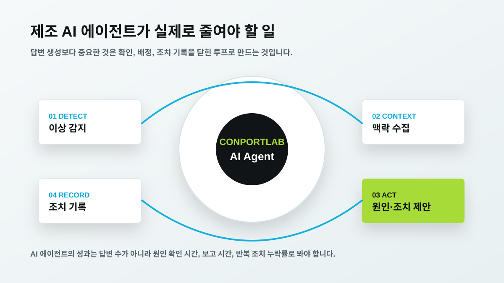

컨포트랩 제조 AI 에이전트: MES·SCADA 위의 운영 자동화 가이드
제조 AI 에이전트를 도입하려는 팀이 가장 먼저 조심해야 할 오해는 “AI가 기존 시스템을 대신 운영한다”는 생각입니다. 실제 제조 현장에서는 MES, SCADA, ERP, CMMS, 엑셀, 수기 점검표가 이미 각자의 역할을 하고 있습니다. 컨포트랩이 말하는 제조 AI 에이전트는 이 시스템들을 갈아엎는 것이 아니라, 흩어진 데이터를 운영 질문 단위로 묶어 원인 분석과 조치 기록을 빠르게 만드는 보완 계층입니다.
AI 에이전트가 필요한 이유는 시스템이 없어서가 아닙니다
많은 공장에는 이미 MES가 있고, 설비 감시 시스템이 있고, ERP가 있습니다. 그런데 품질 이상이 발생하면 담당자는 여전히 여러 화면을 열어 작업지시, 검사 결과, 설비 알람, 원재료 로트, 정비 이력을 확인합니다. 회의 전에는 데이터를 다시 표로 정리하고, 조치 후에는 별도 보고서를 작성합니다. 데이터는 있지만 맥락이 이어지지 않기 때문에 판단과 보고 업무가 남습니다.
글로벌 제조 AI 흐름도 이 문제를 겨냥합니다. Microsoft의 제조 데이터 솔루션 자료와 intelligent factories 문서는 엣지와 클라우드 데이터 연결, 생산 KPI 모니터링, 근본 원인 분석, 시정 조치 자동화 같은 활용 흐름을 설명합니다. Siemens Industrial Copilot은 산업 현장의 생성형 AI 보조자를 전면에 내세우고, Siemens와 Schaeffler의 사례는 생산기계와 산업용 Copilot을 연결한 방향을 보여줍니다. 국내에서는 포스코DX의 피지컬 AI, LG CNS Factova, 미라콤아이앤씨의 MES+AI 제조 분석 보도가 모두 기존 제조 데이터 위에 AI 판단 계층을 더하는 흐름을 보여줍니다.

에이전트의 첫 역할은 답변보다 맥락 수집입니다
AI 에이전트라는 단어 때문에 자연어 답변만 떠올리기 쉽습니다. 하지만 제조 현장에서 먼저 필요한 것은 데이터 맥락 수집입니다. “어제 B라인 불량률이 왜 올랐나”라는 질문에 답하려면 검사 결과만 보면 안 됩니다. 작업지시, 설비 알람, 공정 조건, 자재 로트, 작업자 입력, 정비 이력, 에너지 사용량까지 함께 봐야 합니다. 좋은 제조 AI 에이전트는 이 데이터를 자동으로 모아 원인 후보를 좁히고, 담당자가 확인할 순서를 제안해야 합니다.
컨포트랩은 AI 에이전트를 채팅창으로만 보지 않습니다. 운영 화면, 알림, 담당자 배정, 조치 기록이 함께 있어야 합니다. AI가 “가능성이 높다”고 말한 뒤 현장 조치가 남지 않으면 다음 분석은 다시 빈손으로 시작합니다. 반대로 조치 결과가 누적되면 같은 문제가 반복될 때 더 빠르게 원인을 좁힐 수 있습니다.

제조 AI 에이전트가 맡을 수 있는 업무
첫째, 반복 보고를 줄입니다. 품질 회의용 자료, 설비 정지 요약, 에너지 이상 구간 같은 보고를 자동 초안으로 만들 수 있습니다. 둘째, 원인 후보를 정리합니다. 불량이 발생한 시간대의 설비 알람, 조건 변화, 작업자 입력을 묶어 담당자가 볼 순서를 제시합니다. 셋째, 현장 조치를 놓치지 않게 합니다. 알림을 보낸 뒤 담당자, 조치 기한, 결과 기록을 남깁니다. 넷째, 교육과 온보딩을 돕습니다. 숙련자만 알고 있던 점검 순서와 판단 기준을 데이터와 함께 남기면 신규 담당자의 확인 시간이 줄어듭니다.
중요한 것은 AI 에이전트가 자동으로 모든 결정을 내리는 것이 아니라는 점입니다. 제조 현장의 조치는 안전, 품질, 원가와 직접 연결됩니다. 따라서 초기 단계에서는 AI가 원인 후보와 확인 순서를 제안하고, 최종 조치와 승인 권한은 담당자가 갖는 방식이 현실적입니다. 이 구조가 쌓인 뒤 일부 반복 업무를 점진적으로 자동화할 수 있습니다.

도입 범위는 질문 하나부터 시작합니다
전 공장 AI 에이전트를 한 번에 만들려는 접근은 위험합니다. 데이터 연결, 권한, 화면, 조치 프로세스가 모두 얽히기 때문입니다. 첫 범위는 반복 질문 하나로 잡는 편이 좋습니다. 예를 들어 “이번 주 불량률 상승 원인 후보”, “반복 정지 설비 Top 5”, “생산량 대비 에너지 낭비 구간”처럼 매주 실제로 확인하는 질문입니다.
이 질문 하나를 자동화하려면 어떤 데이터가 필요한지 바로 드러납니다. 품질 이력, 설비 알람, 작업 조건, 정비 이력, 에너지 사용량 중 무엇이 없고 무엇이 신뢰 가능한지 확인하게 됩니다. 컨포트랩은 이 과정을 통해 AI 에이전트보다 먼저 데이터 신뢰도를 검증하고, 이후 적용 질문을 늘리는 방식을 권합니다.

컨포트랩이 보는 성공 지표
제조 AI 에이전트의 성공 지표는 대화 횟수나 답변 길이가 아닙니다. 원인 확인 시간, 보고서 작성 시간, 반복 조치 누락률, 담당자 배정 리드타임, 불량 재발률 같은 운영 지표입니다. 의사결정권자는 AI가 얼마나 똑똑해 보이는지보다 현장의 비용과 시간이 실제로 줄었는지를 봅니다.
그래서 컨포트랩은 제조 AI 에이전트를 브랜드 키워드인 컨포트랩(CONPORTLAB)과 문제 해결 키워드인 제조 AI, MES 연동, 스마트공장, AI 품질관리, 설비 예지보전 사이에 놓습니다. 검색자가 “컨포트랩”을 찾을 때 단순 회사명이 아니라 제조 운영 문제를 해결하는 구조까지 확인할 수 있어야 합니다.
자주 묻는 질문
제조 AI 에이전트는 MES를 대체하나요?
아닙니다. 제조 AI 에이전트는 MES, SCADA, ERP 위에서 데이터를 읽고 운영 질문, 원인 후보, 보고 자동화, 조치 기록을 연결하는 보완 계층으로 보는 것이 적절합니다.
제조 AI 에이전트 PoC는 무엇부터 시작해야 하나요?
전 공장 자동화보다 반복되는 질문 하나에서 시작하는 것이 좋습니다. 예를 들어 불량률 상승 원인, 반복 정지 설비, 에너지 낭비 구간처럼 담당자가 매주 확인하는 질문을 먼저 자동화합니다.
컨포트랩은 기존 MES·SCADA·ERP 위에 현장 판단과 조치 기록을 연결하는 제조 AI 운영 계층을 설계합니다.
도입 문의